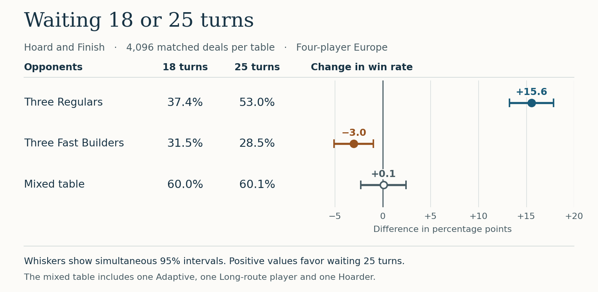

Game simulation · Markus Lejon · 7 November 2026
When should you stop drawing cards in Ticket to Ride: Europe?
On turn 19, you have seven white cards. Frankfurt–Paris costs three. Do you put trains on the board now, or keep drawing while the other players build?
One deal, two decisions
A strategy tournament on the US board inspired this experiment. The Europe board changes the decision. A ferry needs locomotives, a tunnel can cost extra cards, and a station can rescue a ticket when another player claims the track you need.
The simulated player, Hoard & Finish, keeps two destination tickets. One version draws for its first 18 turns before trying to connect those cities. The other waits 25. Each pair starts with the same shuffle, tickets, seat and opponents. Once a player makes a different choice, the market and the other players’ options can change too.
In the first deal against three Regulars, the shorter-wait player spends three white cards on Frankfurt–Paris and keeps four white. Switch to 25 at the same move: the player takes a pink card, sees a new market, then takes an orange. All seven white cards stay in hand.
Watch the choice play out
The replay opens on that decision. Switch the wait to compare the same move. As you step through the game, numbered rings mark the acting player’s destination tickets. Select a ticket to see its two cities, or expand All four hands and tickets to see what everyone holds. Only spectators see all four players’ private cards.
Open replay on its own ↗Seven more turns paid off at one table
Against three Regulars, waiting 25 turns lifted outright wins from 37.4% to 53.0%. Against three Fast Builders, the same change lowered wins from 31.5% to 28.5%. Both kinds of opponent pursue tickets, but Regulars can take more tickets after finishing their first set. Fast Builders start building immediately and stick to their opening pair.


One clue comes from the tickets. Against Fast Builders, the longer wait dropped the chance of completing both tickets from 95.1% to 87.2%. Against Regulars, both versions still finished both tickets in over 95% of games.
At the mixed table, with an Adaptive player, a Long-route player and a Hoarder, the win rates were 60.0% and 60.1%. Those averages hide 1,625 deals where the choice of wait changed whether Hoard & Finish won outright. The longer wait won 814 of those; the shorter wait won 811.
Reproduce the comparison
The simulator plays on the full classic Europe board: 47 cities, 101 tracks and 46 destination tickets. Each wait played 1,024 games from each of four seats at each table, for 24,576 games altogether. Only a sole winner after the game’s tiebreakers counts as an outright win. The six replays show the first deal at each table, played both ways.
These percentages describe the programmed opponents. A human who blocks a route on purpose, values a face-up locomotive differently, or changes plans after seeing a large hand can make the same opening play out differently.
Simulator and board data · Methods and uncertainty intervals · All 12,288 paired results